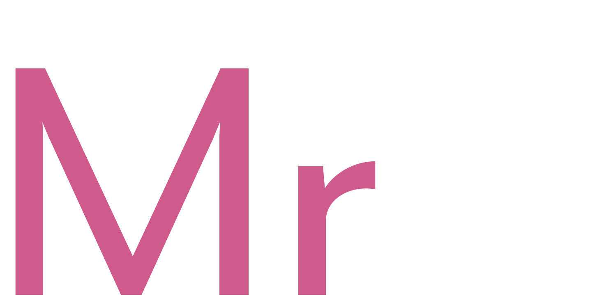
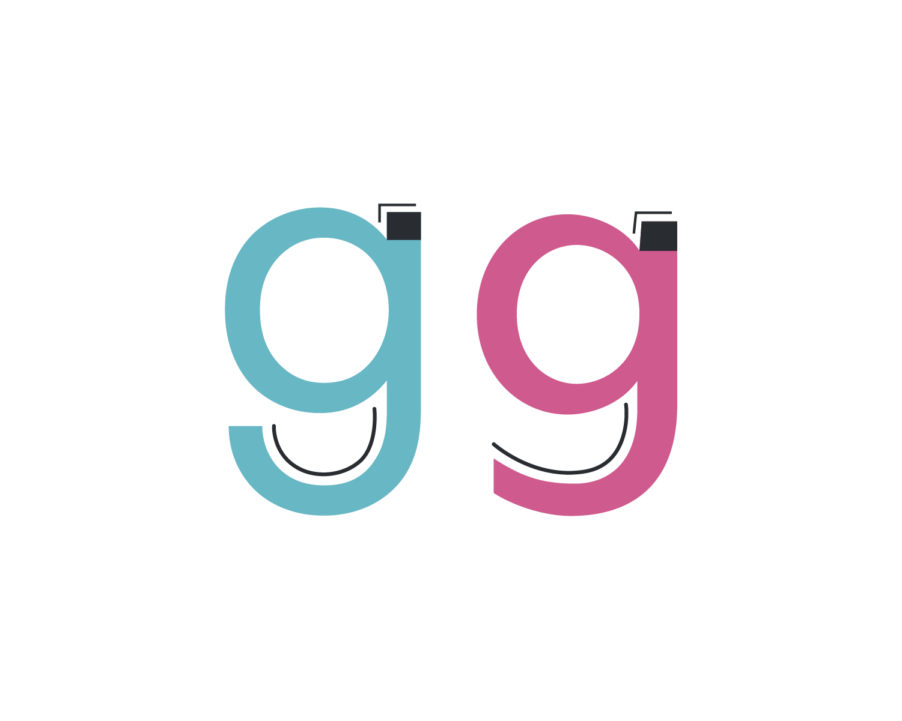
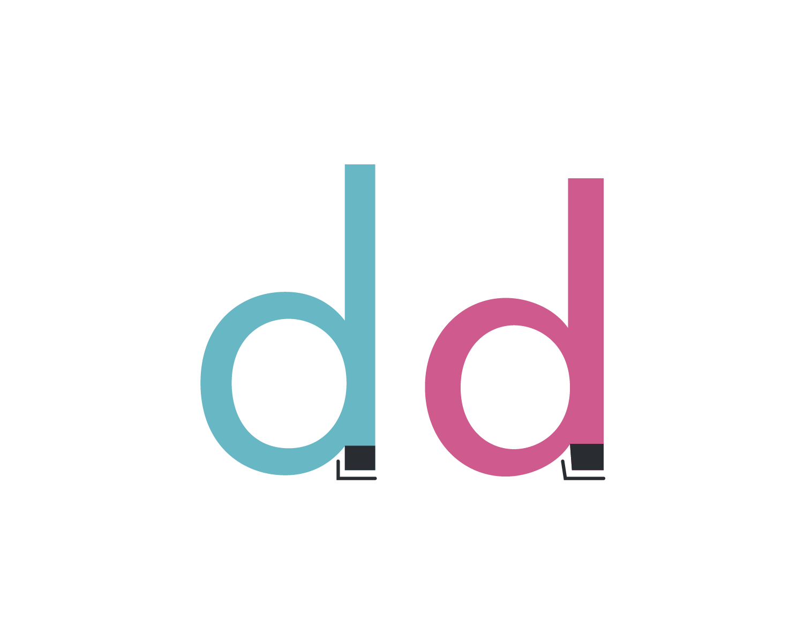
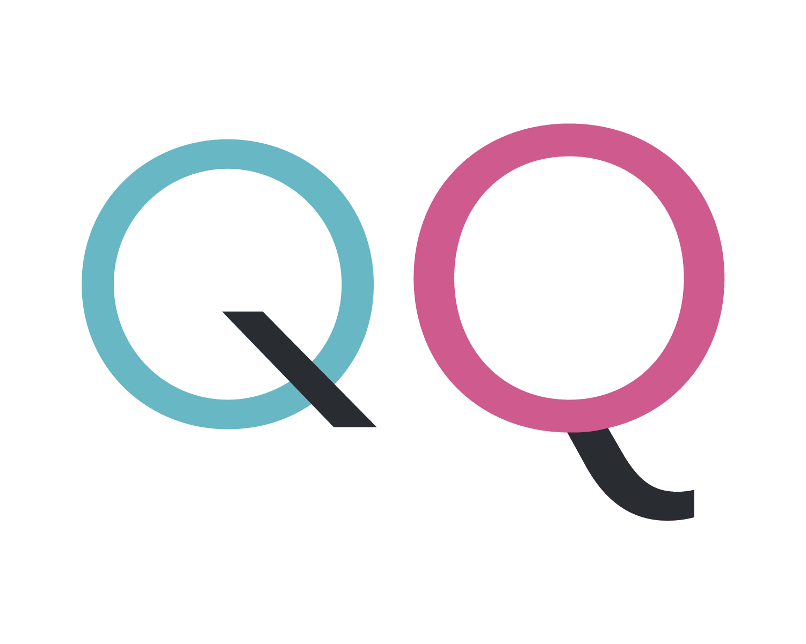

In 1927, Futura, a geometric sans-serif typeface was designed by Paul Renner in Germany in contribution to the New Frankfurt project, which was an affordable modernist housing project. The typeface was based on the geometric Bauhaus design style that had its boom between 1919 and 1933. The Bauhaus ideology was based on simple, modern, and functional geometry. Function over form resulted in a typeface that didn’t include unnecessary ornamental elements. Renner disliked apparently useless things such as abstract art, cinema, and dancing but enjoyed functional art like clean type. His goal was to fuse gothic and roman typefaces and break letters down into basic geometric forms. Unlike other sans-serif typefaces of its time, it had its design based on strokes that were near-even in weight, resulting in low contrast. The lowercase characters have tall ascenders that go over the height of uppercase characters.
Although the debut of Futura was received well globally, it was met with resistance in its native country by the Nazi party because of its more modern type anatomy. The Nazi party preferred traditional blackletter type; however, they would later follow the popular opinion and opt for a cleaner, more readable Roman style typeface. Futura has remained a widely used font since its creation in 1927 due to its timeless legibility. Its simple geometric shapes make it easy to read from a distance, which explains why transportation brands like Mercedes-Benz, Volkswagen, Boeing, and NASA all use Futura on their dashboards. That also explains why it’s used in the brand identity of Crayola, Absolut, and HP, as well as movies by directors Stanley Kubrick and Wes Anderson. Its crowning achievement as a typeface is that it is used on a plaque left on the moon from the Apollo 11 mission, the first ever manned moon landing in 1969. It’s incredible how consistently popular Futura has remained — a true testament to the quality of its design.
Mr Eaves Modern

Mr Eaves Modern is a humanist sans-serif typeface designed by Zuzana Licko, a Slovakia-born but California-based graphic designer. It was created alongside its sibling typeface, Mr Eaves Sans. While Mr Eaves Sans follows the original humanist approach that Mrs Eaves did, Mr Eaves Modern follows a more geometric sans approach. Both were published through the Emigre Type Library in 2009.
Licko’s career creating typefaces began by creating pixel fonts. A bad experience in a calligraphy class caused her to try her hand at designing text on the brand new Apple Macintosh computer in 1985. The limited capabilities of the low-resolution computer screen and dot matrix printers caused her to have to design something unique. Licko began adapting traditional fonts into versions compatible for on-screen and print use.
One of the main concerns was to avoid creating a typeface that looked like it simply had its serifs cut off. So while it matches Mrs Eaves in weight, color, and armature, Mr Eaves stands as its own typeface with many unique characteristics. Some characters were rebalanced and shortened to add to the sans serif look, but certain characters still retain more flourish than typical sans serif fonts. Overall the font still has the generous letter spacing of Mrs Eaves, which gives it a warm friendly feeling.
Comparison
In general, Futura is larger in type size and x-height than Mr Eaves Modern. When comparing the two fonts side by side, Futura extends above the meanline and capline of Mr Eaves Modern. In general, looking at the angle of how the bowl connects to the stem of certain letters, like ‘p’ and 'd', one can distinguish Futura’s rounder appearance from Mr Eaves Modern’s shorter appearance.
Similarities
The uppercase ‘R’ letterforms are very similar except Mr Eaves is much wider. This difference in width can be seen in the bar that connects the bowl with the leg.

The descender in Futura’s ‘g’ is much more round and similar to a half-bowl whereas the descender in Mr Eaves’ ‘g’ extends outward toward the left. This also leaves Mr Eaves’ ‘g’ with a bigger aperture.

The stem height for Futura’s lowercase ‘d’ is taller than Mr Eaves’ ‘d’, but the bottom of the stem for Mr Eaves connects to the bowl at an angle while Futura’s stem remains perpendicular to the bowl. Along with that, Mr Eaves’ bowls generally have more contrast than Futura’s.
Differences
The uppercase ‘M’ in Futura has a pointed vertex and apexes while the ‘M’ in Mr Eaves has a flat vertex and apexes. Along with that, while Futura’s ‘M’ stems and strokes are slanted, they are straight in Mr Eaves.

Futura’s uppercase ‘Q’ has a diagonal tail that crosses through the right of the bowl while Mr Eaves’ ‘Q’ has a curved tail that protrudes from close to the bottom center of its bowl.The lowercase ‘j’ for Futura has a straight tail, with no arc, whereas the ‘j’ for Mr Eaves has a tail that curves at the end with an arc.Futura’s lowercase ‘u’ is very symmetrical without a terminal on the right while Mr Eaves’ ‘u’ has more contrast and a terminal.The eye of Futura’s ‘e’ is bigger and more symmetrical while Mr Eaves’ ‘e’ is smaller and has a more unsymmetrical shape. Along with that, Mr. Eaves’ ‘e’ has a tail that tapers at the end and does not end up as high as Futura’s; this gives Mr Eaves’ ‘e’ a larger aperture (the opening between the crossbar of the ‘e’ and the tail).Futura’s numerals have straight spines and sharp corners while the spines of Mr Eaves’ numerals tend to curve. Mr Eaves’ numerals are also shorter and wider.
Examples and Visual References
Futura Examples
Nordstrom’s original logo from 1930 was based on the newly created Futura font. Although they changed their branding in 1975 and again in 1991, they returned to a Futura-inspired typeface during their 2019 rebrand.Director Wes Anderson uses Futura extensively in his films. The Royal Tenenbaums takes place in a world entirely set in Futura — every prop from the books to the bus stop signage is set in Futura, as well as any on-screen text. In Moonrise Kingdom Anderson contrasts the bold, geometric Futura with the script typeface Tilda, designed by Jessica Hische to match the movie’s whimsical feel.Fashion brands like Calvin Klein and Dolce and Gabbana use Futura in their brand identities. The sleek and sharp letterforms create branding that conveys the high-end feel of the designers.The signage for the Italian Rail Network, a state-owned company that oversees most Italian railway infrastructure, is entirely set in Futura due to its legibility.In 2006 Cisco revamped their logo and added their logo in its iconic bold sans serif, which is based on Futura Bold.
Mr Eaves Modern Examples
Twinings Tea uses both Mrs Eaves and Mr Eaves on their labels for a cohesive look that is legible with a cozy touch.Bowdoin University uses Mr Eaves as its primary typeface to convey a sense of professionalism and friendliness.In 2016, the charity St Catherine’s Hospice introduced a new brand identity featuring the typefaces Mr Eaves and FS Sammy. Founder of design agency SomeOne, who did the rebrand, said that Mr Eaves would be used for all messages “needing a serious and official tone”, while FS Sammy is used to show the brand’s personality.The book title and inner text of “Goodnight, Goodnight, Construction Site” is set in Mr Eaves Modern Heavy.UK art gallery Large Glass uses Mr Eaves as their primary sans serif typeface for their website and brand identity, contrasting it with the serif typefaces Schneidler and Georgia.